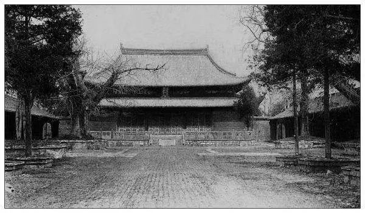
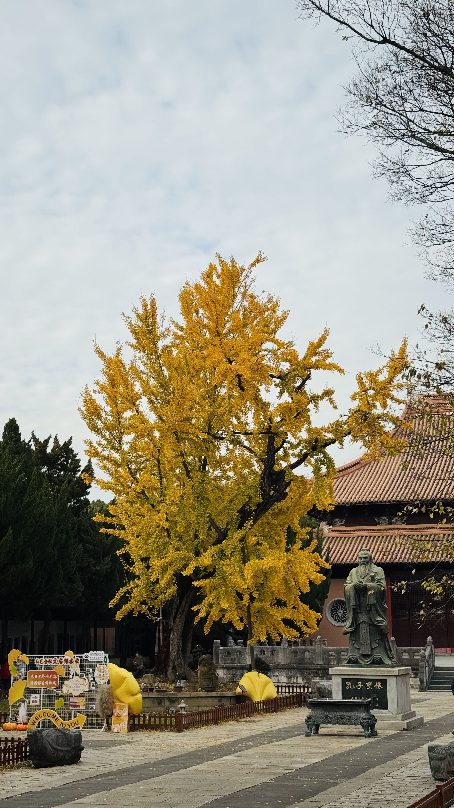
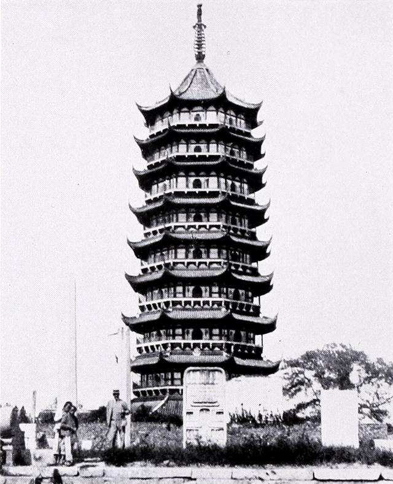
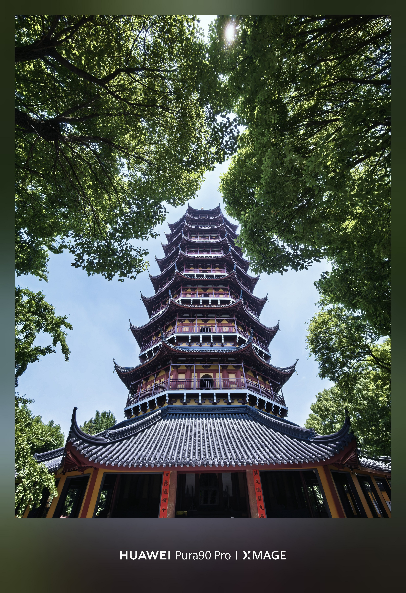
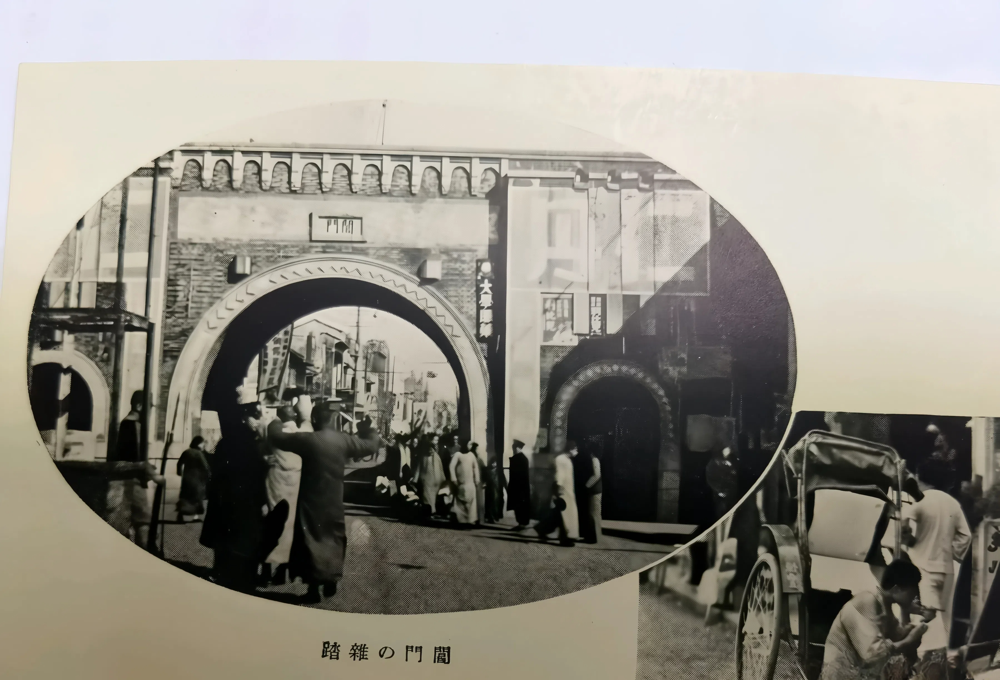
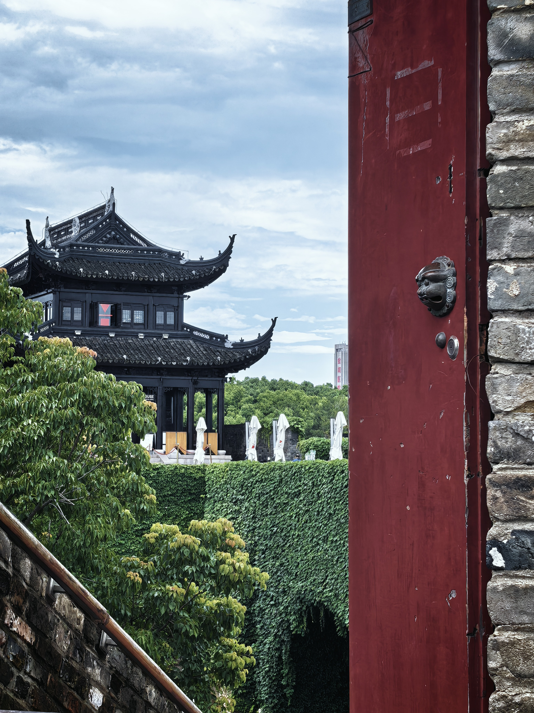
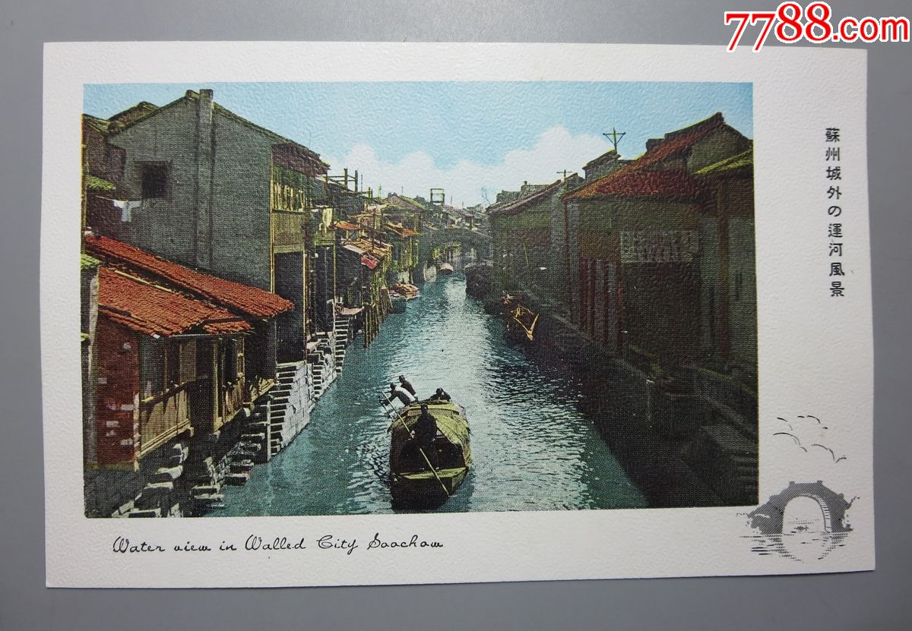
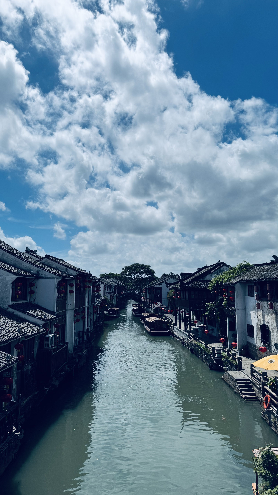
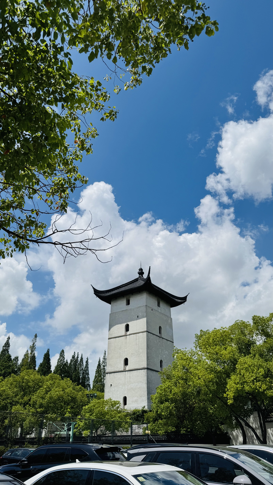

姑苏城 CITYWALK · 现场考古
五 堂 户 外 现 场 课
读万卷书，行万里路。
这一次，我们把课堂搬进苏州城。
不是走马观花的打卡旅游，
是带着故事、带着地图、带着古画，
到现场去——看真东西、听真故事、找真痕迹，顺手把美景带回家。
苏州文脉之旅
一座庙学，撑起苏州状元半壁江山


北宋景祐二年，范仲淹捐宅办学，首创"庙学合一"，天下府学自此而始。四大宋碑静静矗立，平江图上的街巷如今还能一条条对上。
大成殿50根楠木柱顶天立地，苏州50余位状元的名字刻在碑上，也刻进了这座城市的基因。
深秋银杏转黄，800岁古树与红墙、大成殿一次同框——一年里最美的文庙，只在短短两三周，值得专程来赴。
苏州古城龙脉
三国时孙权为母亲建的塔，至今仍在


九级八面，76米，江南最高砖木古塔。站在塔下抬头，塔檐层层收分，古城限高24米的默契就是让它永远是天际线主角。
塔园中还藏着一块元代纪功碑，118个人物深浮雕，讲的是张士诚的故事——苏州人不一定都知道，但值得知道。
塔前寻一棵圆冠树，蹲低仰拍，让树冠稳稳落在塔刹上——给宝塔戴上一顶"绿帽子"，北寺塔最出圈的趣味机位。
红尘中一二等富贵风流
曹雪芹开篇就写的地方，到底有多繁华？


八大城门中唯一水陆并行的双城门，曹雪芹在《红楼梦》开头把天下最繁华的地方定在了这里。
五水汇阊，运河商船从这里进苏州；城门西侧的瓮城是苏州现存最大，城墙砖上还能找到几百年前的烧造铭文。白居易在这里登船出发，山塘河从这里流向虎丘。
城墙上寻一处射箭口对准虎丘塔，雉堞为框、古塔入画；再用延时摄影收尽西中市的车水马龙，用超广角让北寺塔与东方之门千年同框。
不为人知的故事
七里山塘，不只是游客的山塘


唐宝历元年，白居易任苏州刺史，挖了山塘河、筑了山塘街，从此"自开山寺路，水陆往来频"。
街上会馆林立——陕西商人、潮州商人、岭南商人，都在这里安家。岭南会馆内仍可赏丝织与刺绣工艺，一窥当年"日出万绸"的繁华底色。野芳浜是当年才子佳人送别的地方，五人墓里葬着明代五位平民义士，张溥一篇《五人墓碑记》让他们名留青史。
通贵桥畔是公认的"江南水乡标准像"机位——拱桥、流水、白墙黛瓦，一张照片说尽山塘。
从教会学堂到近代大学
中西交汇的百年学府，苏州近代教育从这里起步

1900年，美国基督教监理会在天赐庄创办东吴大学，这是中国最早的教会大学之一。林堂钟楼1903年落成，是苏州最老的西式主楼；孙堂哥特复兴式石墙厚重，葛堂是苏州第一座钢筋混凝土科学馆。
翁同龢题写的"东吴大学"校门仍在，"养天地正气，法古今完人"的校训仍在。从教会学堂到近代大学，天赐庄为苏州教育翻开了新的一页。
林堂钟楼正前草坪放低机位仰拍，哥特尖顶衬蓝天白云——百年学府的标准像，就差你按下快门。
古画里的桥洞，你得站在桥上才知道少了几个；
塔的高度，你得抬头才知道什么叫"巍巍"；
城墙砖上的字，你得蹲下来才看得见；
历史不是书上的文字，是脚下的路、眼前的屋、头顶的檐。
古今对照，知行合一